전자계산기조직응용기사 (2019-08-04 기출문제)
1과목: 전자계산기 프로그래밍
1. C언어에서 포인터에 대한 기본개념의 설명으로 틀린 것은?
- 포인터 변수를 선언할 때 %를 붙인다.
- 주소를 담는 그릇(변수)이라고 생각한다.
- 포인터 변수 p에는 변수의 주소가 들어간다.
- 포인터 변수는 정수형이든 문자형이든 관계없이 4bte를 차지한다.
(정답률: 70%)

2. 프로그래밍언어에서 스택 기반 기억 장소 할당에 대한 설명으로 옳은 것은?
- 인터프리터(Interpreter)기법을 사용한다.
- 컴파일러(Compiler)기법을 사용한다.
- 단순하여 쉽게 구현할 수 있지만 언어에 대한 융통성(Flexibility)이 적어진다.
- 순환 구조를 허용하지 못하며, 배열을 비롯한 모든 변수에 대한 기억 장소가 정적으로 한정되어져야 한다.
(정답률: 38%)
3. 단항 연산자 연산에 해당하는 것은?
- MOVE
- AND
- OR
- XOR
(정답률: 83%)
4. 기계어에 대한 설명으로 옳지 않은 것은?
- 프로그램 작성이 어렵고 복잡하다.
- 각 컴퓨터마다 모두 같은 기계어를 가진다.
- 실행할 명령, 데이터, 기억 장소의 소주 등을 포함한다.
- 컴퓨터가 해석할 수 있는 1 또는 0의 2진수로 이루어진다.
(정답률: 83%)
5. 정적 바인딩(static binding)에 해당하지 않는 것은?
- 언어구현시간
- 번역시간
- 링크시간
- 실행시간
(정답률: 50%)
6. 원시프로그램을 번역할 때 어셈블러에게 요구되는 동작을 지시하는 명령으로서 기계어로 번역되지 않는 명령어는?
- macro instruction
- machine instruction
- operand instruction
- pseudo instruction
(정답률: 68%)
7. C언어에서 무조건 분기문이 아닌 것은?
- DO WHILE 문
- CONTINUE 문
- GO TO 문
- BREAK 문
(정답률: 65%)
8. 객체지향에서 어떤 클래스에 속하는 구체적인 객체를 의미하는 것은?
- method
- operation
- message
- instance
(정답률: 66%)
9. 2진수 덧셈으로 8비트(bit) 레지스터 250과 10을 더하는 ADC 명령어를 사용하여 덧셈한 결과는?
- 000 1010 (10)
- 111 0000 (240)
- 1111 1010 (250)
- 1 0000 0100 (260)
(정답률: 68%)
10. 프로그램에서 함수를 호출하는 부분과 실제로 이러한 함수 호출에 의하여 실행되는 명령어들을 연결하는 작업 또는 프로그램에서 사용되는 변수와 이러한 변수 이름에 의하여 접근되는 기억 장소 위치를 연결하는 작업을 무엇이라고 하는가?
- comment
- loading
- binding
- paging
(정답률: 71%)
11. 다음은 C언어에서 switch문의 일반적인 형식이다. 설명이 틀린 것은?
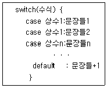
- 각 case에는 정수형 상수만 올 수 있다.
- 각 case절에는 중괄호 없이 여러 문장들이 올 수 있다.
- 각 case 절의 마지막 문장으로 반드시 default문을 사용한다.
- switch문에서는 문자형을 포함하여 정수형 수식만 사용할 수 있다.
(정답률: 53%)
12. 객체 지향언어인 자바(java) 프로그램이다. 출력되는 값은?
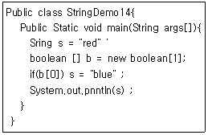
- null
- red
- blue
- 오류발생
(정답률: 58%)
13. 어셈블리어에 대한 설명으로 틀린 것은?
- 기억장치의 제어가 가능하다.
- 오류 검증이 용이하며 호환성이 우수하다.
- 기호를 정하여 명령어와 데이터를 기술한다.
- 최적의 실행시간을 고려한 프로그램 작성이 가능하다.
(정답률: 61%)
14. 다음 프로그램에서 출력되는 결과는?
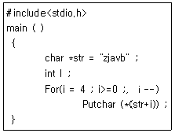
- avbzj
- zjavb
- vbzja
- bvajz
(정답률: 74%)
15. 다음 중 C언어에서 식별자(identifiler)표기가 잘못된 것은?
- age01
- -jumsu
- x25
- x
(정답률: 75%)
16. C언어의 기억 클래스(Storage Class) 종류에 해당하지 않는 것은?
- auto
- internal
- static
- register
(정답률: 65%)
17. 윈도우 프로그래밍에 관한 설명으로 틀린 것은?
- 사용자 인터페이스의 작성이 용이하다.
- 특성 사건이 발생했을 때 이를 처리하는 프로그램을 작성하는 형태로 프로그램이 형성된다.
- 윈도우 프로그램으로 작성한 응용 프로그램은 컴파일하지 않아도 실행가능하다.
- 윈도우를 만들고 그 위에 각종 컨트롤들을 배치하는 것으로 사용자 인터페이스가 만들어진다.
(정답률: 76%)
18. 다음 C언어로 작성된 프로그램을 실행하였을 때 출력 결과로 옳은 것은?
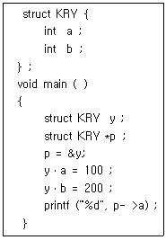
- 100
- 200
- 10000
- 20000
(정답률: 71%)
19. 객체지향 언어에서 캡슐화에 대한 설명으로 거리가 먼 것은?
- 변경 시 부작용을 방지한다.
- 객체 간에 결합도를 낮춘다.
- 프로그래밍 생산성을 낮춘다.
- 객체의 응집도를 높인다.
(정답률: 74%)
20. 객체지향 개념 중 객체들 간의 관계를 구축하는 방법으로 기존 클래스로부터 속성과 동작을 물려받는 개념은?
- class
- method
- inheritance
- abstraction
(정답률: 72%)
2과목: 자료구조 및 데이터통신
21. 신호대 잡음비(S/N)가 1000이고 채널 대역폭이 1(MHz)일 때 채널용량은 약 몇 Mb/s인가?
- 2.45
- 4.86
- 9.96
- 12.99
(정답률: 60%)
22. DM(DeIta ModuIation)에 대한 설명으로 틀린 것은?
- 2레벨 양자화를 수행한다.
- 시스템 구성이 간단하고 신뢰성이 높다.
- DM 송신기는 양자화기, 부로화기, 예측기 등으로 구성한다.
- 전송 비트수는 적으나 임펄스 잡음에 약하다.
(정답률: 53%)
23. PCM에서 IsI를 측정하기 위해 eye pattern을 이용하는데 눈을 뜬 상하의 높이는 무엇을 의미하는가?
- 변조도
- 시스템 감도
- 잡음의 여유도
- IsI 갑선 없이 수신파를 sampIing할 수 있는 주기
(정답률: 52%)
24. 다수의 타임 슬롯으로 하나의 프레임이 구성되고 각 타임 슬롯에 채널을 할당하여 다중화하는 것은?
- TDM
- CDM
- FDM
- CSM
(정답률: 72%)
25. 망(network) 구조의 기본 유형이 아닌 것은?
- 버스형
- 링형
- 트리형
- 십자형
(정답률: 76%)
26. 통신 채널의 용량 C를 올바르게 표시한 식은? (단, W: 채널대역폭, S/N: 신호대 잡음비
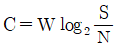
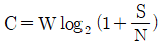
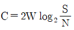
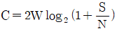
(정답률: 66%)
27. Stop-and-Wait 방식에서 수신측이 3번 프레임에 대해 부정 수신확인(NAK)을 보낸 경우 송신측의 행동으로 올바른 것은?
- 3번 프레임만 재전송한다.
- 4번 프레임부터 모두 재전송한다.
- 1, 2, 3번 프레임을 재전송한다.
- 현재의 윈도우 크기만큼 모두 전송한 후 응답을 기다린다.
(정답률: 67%)
28. QPSK 변조 시 각 신호 간의 취상차는?
- 45°
- 90°
- 135°
- 18°
(정답률: 71%)
29. 다음 중 TCP 헤더에 포함되는 정보가 아닌 것은?
- 긴급 포인터
- 호스트 주소
- 순서 번호
- 체크섬
(정답률: 40%)
30. OSI 7계층 중 응용 프로세스 간에 데이터 표현상의 차이와 상관없이 통신이 가능하며 독립성을 제공(코드변환, 데이터 압축 등)하는 계층은?
- 물리계층
- 표현계층
- 데이터 링크계층
- 세션계층
(정답률: 56%)
31. 스키마의 3계층 중 다음 설명에 해당하는 것은?
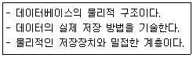
- 외부 스키마
- 개념 스키마
- 내부 스키마
- 관계 스키마
(정답률: 62%)
32. 색인 순차 파일에서 인덱스 영역의 종류로 옳지 않은 것은?
- Overflow Index Area
- Track Index Area
- Cylinder Index Area
- Master Index Area
(정답률: 72%)
33. 선형 자료구조에 해당하지 않는 것은?
- 트리
- 스택
- 큐
- 데크
(정답률: 74%)
34. 트랙잭션의 특성에 해당하지 않는 것은?
- Atomicity
- Consistency
- Distribution
- Isoaltion
(정답률: 68%)
35. DBMS의 필수기능과 거리가 먼 것은?
- 정의 기능
- 독립 기능
- 조작 기능
- 제어 기능
(정답률: 75%)
36. 다음 트리를 "Pre-order"로 운행한 결과는?
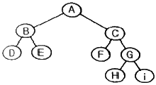
- A B D E C F G Hⅰ
- D B E F C H GⅰA
- A B C D E F G Hⅰ
- D E B F HⅰG C A
(정답률: 71%)
37. 데이터베이스 설계 순서로 옳은 것은?
- 논리적 설계→개념적 설계→물리적 설계
- 개념적 설계→물리적 설계→논리적 설계
- 개념적 설계→논리적 설계→물리적 설계
- 논리적 설계→물리적 설계→개념적 설계
(정답률: 75%)
38. 해싱 함수의 값을 구한 결과, 두 개의 키 값이 동일한 값을 가지는 경우를 무엇이라고 하는가?
- Relation
- Overflow
- Clustering
- Collision
(정답률: 74%)
39. 다음 자료에 대하여 버블 정렬을 이용하여 오름차순으로 정렬할 경우 “pass 1"의 실행 결과는?
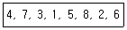
- 3, 1, 4, 5, 2, 6, 7, 8
- 1, 3, 4, 2, 5, 6, 7, 8
- 4, 3, 1, 5, 7, 2, 6, 8
- 1, 3, 2, 4, 5, 6, 7, 8
(정답률: 75%)
40. 최적, 촤악의 경우에도 수행시간이 O(nlog2n)가 되는 정렬 알고리즘은?
- 힙 소트
- 퀵 소트
- 버블 소트
- 삽입 소트
(정답률: 61%)
3과목: 전자계산기구조
41. INTERRUPT의 발생 원인으로 가장 옳지 않은 것은?
- 일방적인 인스트럭션 수행
- 수퍼바이저 콜
- 정전이나 자료 전달의 오류 발생
- 전압의 변화나 온도 변화
(정답률: 61%)
42. 캐시(cache) 액세스 시간이 11sec, 주기억장치 액세스 시간이 20sec, 캐시 적중률이 90%일 때 기억장치 평균 엑세스 시간을 구하면?
- 1sec
- 3sec
- 9sec
- 13sec
(정답률: 56%)
43. 기억장치계층구조에서 상위계층 기억장치가 가지는 특징으로 옳은 것은?
- 기억장치 액세스 속도가 느려진다.
- CPU에 의한 액세스 빈도가 높아진다.
- 기억장치 용량이 증가한다.
- 기억장치를 구성하는 비트당 가격이 낮아진다.
(정답률: 67%)
44. 중재동작이 끝날 때마다 모든 마스터들의 우선순위가 한 단계씩 낮아지고 가장 우선순위가 낮았던 마스터가 최상위 우선순위를 가지도록 하는 가변우선순위 방식은?
- 동등 우선순위(Equal Priority)방식
- 임의 우선순위(Random Priority)방식
- 회전 우선순위(Rotating Priority)방식
- 최소-최근 사용(Least Priority Used)방식
(정답률: 71%)
45. 일반적인 컴퓨터시스템의 바이오스(BIOS)가 탑재되는 곳은?
- RAM
- I/O port
- ROM
- CPU
(정답률: 64%)
46. 10진수 -456을 PACK 형식으로 표현한 것은?
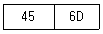
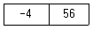
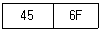
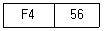
(정답률: 52%)
47. 전가산기를 구성하기 위하여 필요한 소자를 바르게 나타낸 것은?
- 반기산기 2개, AND 게이트 1개
- 반기산기 1개, AND 게이트 2개
- 반기산기 2개, OR 게이트 1개
- 반기산기 1개, OR 게이트 2개
(정답률: 61%)
48. 다음 마이크로연산이 나타내는 동작은?
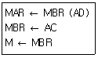
- Branch AC
- Store to AC
- Add AC
- Load to AC
(정답률: 51%)
49. DRAM에 관한 설명으로 옳지 않은 것은?
- SRAM에 비해 기억 용량이 크다.
- 쌍안경 논리 회로의 성질을 응용한다.
- 주기억 장치 구성에 사용된다.
- SRAM에 비해 속도가 느리다.
(정답률: 54%)
50. 다음 중 오류 검출 코드(Error Detection Code)가 아닌 것은?
- Biquinary code
- 2-out-of-5 code
- 3-out-of-5 code
- Excess-3 code
(정답률: 57%)
51. 누산기(accumulator)에 대한 설명으로 가장 옳은 것은?
- 연산장치에 있는 레지스터(register)의 하나로 연산 결과를 일시적으로 기억하는 장치이다.
- 주기억장치 내에 존재하는 회로로 가감승제 계산 및 논리 연산을 행하는 장치이다.
- 일정한 입력 숫자들을 더하여 그 누계를 항상 보관하는 장치이다.
- 정밀 계산을 위해 특별히 만들어 두어 유효숫자의 개수를 늘리기 위한 것이다.
(정답률: 65%)
52. 16개의 입력선을 가진 multiplexer의 출력에 32개의 출력선을 가진 demultiplexer를 연결했을 경우에 multiplexer와 demultiplexer의 선택 선은 각각 몇 개를 가져야 하는가?
- multiplexer:4개, demultiplexer:5개
- multiplexer:4개, demultiplexer:3개
- multiplexer:8개, demultiplexer:4개
- multiplexer:4개, demultiplexer:8개
(정답률: 75%)
53. 16개의 플립플롭으로 된 shift register에 10진수 13이 기억되어 있을 때 3bit 만큼 왼쪽으로 shift 했을 때의 값은?
- 26
- 39
- 52
- 104
(정답률: 62%)
54. 메모리 인터리빙과 관계 없는 것은?
- 데이터의 저장 공간을 확장하기 위한 방법이다.
- 복수 모듈 기억 장치를 이용한다.
- 기억 장치에 접근을 각 모듈에 번갈아 가면서 하도록 한다.
- 각 인스트럭션에서 사용하는 데이터의 주소에 관계가 있다.
(정답률: 49%)
55. 컴퓨터의 메이저 상태에 대한 설명으로 틀린 것은?
- EXECUTE 상태가 끝나면 항상 FETCH 상태로만 간다.
- 간접 주소 명령어 형식인 경우 FETCH-INDIRECT-EXECUTE 순서로 진행되어야 한다.
- EXECUTE 상태는 연산자 코드의 내용에 따라 연산을 수행하는 과정이다.
- FETCH 상태에서는 기억 장치에서 인스트럭션을 읽어 중앙처리장치로 가져온다.
(정답률: 66%)
56. 8비트 구조에 해당하는 인텔 컴퓨터 프로세서는?
- Intel Core i5
- Intel 8⑤1
- Intel Pentium
- Intel Celeron
(정답률: 65%)
57. 기억장치가 1024 워드(word)로 구성되어 있고, 각 워드는 16비트(bit)로 구성되어 있다고 가정할 때, PC, MAR, MBR의 비트 수를 옳게 나타낸 것은?
- PC:10, MAR:10, MBR:10
- PC:10, MAR:10, MBR:16
- PC:16, MAR:10, MBR:16
- PC:16, MAR:16, MBR:16
(정답률: 66%)
58. 입출력 방법 가운데 I/O를 위한 특별한 명령어를 I/O 프로세서에게 수행토록 하여 CPU 관여없이 I/O를 수행하는 방법은?
- 프로그램의 의한 I/O
- 인터럽트에 의한 I/O
- 데이지 체인에 의한 I/O
- 채널에 의한 I/O
(정답률: 47%)
59. 메이저 스테이트 중 하드웨어로 실현되는 서브루틴의 호출이라고 볼 수 있는 것은?
- EXECUTE 스테이트
- INDIRECT 스테이트
- INTERRUPT 스테이트
- FETCH 스테이트
(정답률: 61%)
60. 0-주소 인스트럭션에 반드시 필요한 것은?
- 스택
- 베이스 레지스터
- 큐
- 주소 레지스터
(정답률: 69%)
4과목: 운영체제
61. 다음과 같은 3개의 작업에 대하여 FCFS 알고 리즘을 사용할 때, 임의의 작업 순서로 얻을 수 있는 최대 평균 반환 시간을 T, 최소 평균 반환 시간을 t라고 가정했을 경우 T-t의 값은?
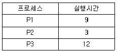
- 3
- 4
- 5
- 6
(정답률: 51%)
62. PCB(Process Control Block)가 갖고 있는 정보가 아닌 것은?
- 할당되지 않은 주변장치의 상태 정보
- 프로세스의 현재 상태
- 프로세스 고유 식별자
- 스케줄링 및 프로세스의 우선순위
(정답률: 66%)
63. 파일 구조 중 순차 편성에 대한 설명으로 옳지 않은 것은?
- 특정 레코드를 검색할 때, 순차적 검색을 하므로 검색 효율이 높다.
- 어떠한 기억 매체에서도 실현 가능하다.
- 주기적으로 처리하는 경우에 시간적으로 속도가 빠르며, 처리비용이 절감된다.
- 순차적으로 실제 데이터만 저장되므로 기억 공간일 활용률이 높다.
(정답률: 55%)
64. 빈 기억공간의 크기가 20K, 16K, 8K, 40K일 때 기억장치 배치 전략으로 "Worst Fit"을 사용하여 17K의 프로그램을 적재할 경우 내부 단편화의 크기는?
- 3K
- 23K
- 44K
- 67K
(정답률: 71%)
65. 운영체제의 목적으로 적합하지 않은 것은?
- Throughput 향상
- Turn around time 단축
- Availability 감소
- Reliability 향상
(정답률: 74%)
66. UNIX의 쉘(Shell)에 대한 설명으로 가장 옳지 않은 것은?
- 시스템과 사용자 간의 인터페이스를 담당한다.
- 프로세스 관리, 파일 관리, 입ㆍ출력 관리, 기억장치 관리 등의 기능을 수행한다.
- 명령어 해석기 역할을 한다.
- 사용자의 명령어를 인식하여 프로그램을 호출한다.
(정답률: 64%)
67. 교착 상태의 해결 기법 중 일반적으로 자원의 낭비가 가장 심한 것으로 알려진 기법은?
- 교착 상태의 예방
- 교착 상태의 회피
- 교착 상태의 발견
- 교착 상태의 복구
(정답률: 52%)
68. 운영체제의 기능으로 가장 거리가 먼 것은?
- 사용자의 편리한 환경 제공
- 처리능력 및 신뢰도 향상
- 컴퓨터 시스템의 성능 최적화
- 언어번역기능을 통한 실행 가능한 프로그램 생성
(정답률: 81%)
69. UNIX에서 각 파일에 대한 정보를 기억하고 있는 재료구조로서 파일 소유자의 식별번호, 파일 크기, 파일의 최종 수정시간, 파일 링크 수 등의 내용을 가지고 있는 것은?
- Super block
- I-node
- Directory
- File system mounting
(정답률: 72%)
70. 파일 구성 방식 중 ISAM(Indxed Sequential Access-Method)의 물리적인 색인(index) 구성은 디스크의 물리적 특성에 따라 색인을 구성하는데, 다음 중 3단계 색인에 해당되지 않는 것은?
- Cylinder index
- Track index
- Master index
- Volume index
(정답률: 72%)
71. 가상주소와 물리주소의 대응 관계로 가상 주소로부터 물리주소를 찾아내는 것을 무엇이라 하는가?
- 스케줄링(scheduling)
- 매핑(mapping)
- 버퍼링(buffering)
- 스왑-인(swap in)
(정답률: 78%)
72. 다음 설명에 해당하는 디렉토리 구조는?
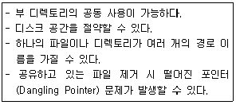
- 비순환 그래프 디렉토리 시스템
- 트리 구조 디렉토리 시스템
- 1단계 디렉토리 시스템
- 2단계 디렉토리 시스템
(정답률: 54%)
73. 스레드(Threads)에 관한 설명으로 옳지 않은 것은?
- 하드웨어, 운영체제의 성능과 응용프로그램의 처리율을 향상시킬 수 있다.
- 스레드는 그들이 속한 프로세스의 자원과 메모리를 공유한다.
- 다중 프로세스 구조에서 각 스레드는 다른 프로세스에서 병렬로 실행될 수 있다.
- 스레드는 동일 프로세스 환경에서 서로 다른 독립적인 다중 수행이 불가능하다.
(정답률: 72%)
74. 다중 처리(Multi-Processing) 시스템에 대한 설명으로 가장 적합한 것은?
- 요구사항이 비슷한 여러 개의 작업을 모아서 한꺼번에 처리하는 방식이다.
- 동시에 프로그램을 수행할 수 있는 CPU를 여러 개 두고 업무를 분담하여 처리하는 방식이다.
- 시한성을 갖는 자료가 발생할 때마다 즉시 처리하여 결과를 출력하거나, 요구에 응답하는 방식이다.
- 분산된 여러 개의 단말기에 분담시켜 통신회선을 통하여 상호간의 교신, 처리하는 방식이다.
(정답률: 64%)
75. 다음은 교착상태 발생조건 중 어떤 조건을 제거하기 위한 것인가?
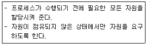
- Mutual Exclusion
- Hold and Wait
- Non-Preemption
- Circuar Wait
(정답률: 50%)
76. 보안 유지 기법 중 하드웨어나 운영체제에 내장된 보안 기능을 이용하여 프로그램의 신뢰성 있는 운영과 데이터의 무결성 보장을 기하는 기법은?
- 외부 보안
- 운용 보안
- 사용자 인터페이스 보안
- 내부 보안
(정답률: 68%)
77. 3개의 페이지를 수용할 수 있는 주기억장치가 있으며, 초기에는 모두 비어 있다고 가정한다. 다음의 순서로 페이지 참조가 발생할 때, FIFO 페이지 교체 알고리즘을 사용할 경우 몇 번의 페이지 결함이 발생하는가?
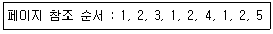
- 4
- 5
- 6
- 7
(정답률: 50%)
78. 절대로더에서 각 기능과 수행 주체의 연결이 가장 옳지 않은 것은?
- 연결-프로그래머
- 기억장소할당-로더
- 적재-로더
- 재배치-어셈블러
(정답률: 45%)
79. 다음은 분산 처리 시스템의 네트워크 위상 중 무엇에 대한 설명인가?
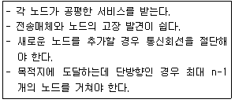
- 완전 연결 구조
- 계층 연결 구조
- 성형 구조
- 링형 구조
(정답률: 66%)
80. UNIX 운영체제에 관한 특징으로 가장 옳지 않은 것은?
- 하나 이상의 작업에 대하여 백그라운드에서 수행 가능하다.
- Multi-User는 지원하지만 Multi-Tasking은 지원하지 않는다.
- 트리 구조의 파일 시스템을 갖는다.
- 이식성이 높으며 장치 간의 호환성이 높다.
(정답률: 72%)
5과목: 마이크로 전자계산기
81. CPU가 무엇을 하고 있는가를 나타내는 상태는?
- fetch state
- major state
- stable state
- unstable state
(정답률: 65%)
82. 어떤 마이크로컴퓨터 시스템의 데이터 버스(data bus)가 16비트, 어드레스 버스(address bus)가 24비트로 구성되었을 때, 이 컴퓨터 시스템 주기억 장치의 최대 용량은? (단, KB=Kilo Byte, MB=Mega Byte이다.)
- 64 KB
- 256 KB
- 1 MB
- 16 MB
(정답률: 41%)
83. 배열(array)과 같은 자료를 다룰 때 흔히 사용되는 주소지정 방식은?
- 직접주소방식
- 간접주소방식
- 인덱스주소방식
- 상대주소방식
(정답률: 53%)
84. 병렬 입출력 인터페이스(interface)의 특징으로 옳은 것은?
- 원거리 통신에 사용한다.
- 고속의 데이터 전송을 할 수 있다.
- 전송을 위한 회선이 적게 사용된다.
- 입력된 직렬 데이터를 병렬 데이터로 변환시켜 주는 기능을 갖고 있다.
(정답률: 53%)
85. 다음 명령어 중 절대주소지정(Absolute Addressing) 방식을 사용한 것은?
- LD A, B
- ADD A, 10H
- LD (1330 H), A
- LD B, (IX+07)
(정답률: 58%)
86. 마이크로프로세서의 처리 능력(performance)과 가장 관계가 적은 것은?
- clock frequency
- data bus width
- addressing mode
- software compatibility
(정답률: 49%)
87. 마이크로프로세서의 발전과정상 16비트 컴퓨터의 특징으로 틀린 것은?
- 데이터 버스가 16비트로 확장되었다.
- 멀티태스킹 지원이 가능하게 되었다.
- co-processor를 장착하여 연산기능을 향상시켰다.
- 논리적 메모리 용량한계를 극복하기 위하여 가상메모리 기법을 도입하였다.
(정답률: 49%)
88. 응용 프로그래머를 위해 미리 프로그램 업체에서 제공하는 작업용 프로그램을 무엇이라 하는가?
- macro
- DBMS
- library program
- monitoring program
(정답률: 68%)
89. 기억장치 대역폭(bandwidth)에 대한 설명 중 틀린 것은?
- 사이클 타임 또는 접근시간과 기억장치에 연결되어 있는 데이터 버스 길이(버스 폭)에 따라 결정된다.
- 기억 장치가 마이크로프로세서에 1초 동안에 전송할 수 있는 비트 수이다.
- 한 번에 전송되는 데이터 워드가 크면 대역폭은 증가한다.
- 기억장치 모듈 접근시간이 크면 대역폭은 증가한다.
(정답률: 61%)
90. 프로그래머가 프로그램 내에서 동일한 부분을 반복하여 사용하는 불편을 없애기 위해 사용하는 프로세서는?
- Macro Processor
- Compiler
- Assembler
- Loader
(정답률: 74%)
91. 긴 프로그램 작성 시, 전체 프로그램을 독립적으로 구성 가능한 기능적 단위로 분할하여 설계하는 방법은?
- Top-down
- flow charting
- structured programming
- modular programming
(정답률: 63%)
92. 제어논리가 마이크로 프로그램 기억 장치인 읽기용 기억 장치(ROM)에 구성되어 있어, 여러 대규모 집적회로군이 이미 마이크로프로그램 되어 있는 것은?
- 가상 CPU
- 슈퍼 VHS
- 슈퍼 워크스테이션
- 쇼트키 쌍극형 마이크로컴퓨터 세트
(정답률: 59%)
93. 다음 그림과 같은 Common Cathode 타입의 7-Segment에 숫자 "2"를 출력하기 위한 신호로 옳은 것은?
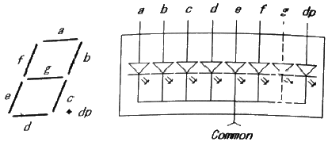
- a, b, d, e, g는 “0”, c, f, dp는 “1”을 출력하고 Common 단자에 “1”을 출력
- a, b, d, e, g는 “0”, c, f, dp는 “1”을 출력하고 Common 단자에 “0”을 출력
- a, b, d, e, g는 “1”, c, f, dp는 “0”을 출력하고 Common 단자에 “1”을 출력
- a, b, d, e, g는 “1”, c, f, dp는 “0”을 출력하고 Common 단자에 “0”을 출력
(정답률: 39%)
94. 컴퓨터 시스템에서 예기치 않은 일이 발생하였을 경우 제어 프로그램에 알려주는 것을 무엇이라고 하는가?
- Mask
- Interrupt
- Controlling
- PSW(Program State Word)
(정답률: 77%)
95. 마이크로프로세서(micro processor) 어셈블리 프로그램의 ORG 명령이 사용될 수 없는 것은?
- 서브루틴(subroutine)
- 램 스토리지(RAM storage)
- 메모리 스택(memory stack)
- 프로그램 카운터(program counter)
(정답률: 53%)
96. 자료를 기억하거나 읽는 자료를 받는 레지스터로 CPU가 데이터를 처리하는데 반드시 거쳐야 하는 레지스터는?
- MAR
- MBR
- AC
- PC
(정답률: 50%)
97. 메인루틴에서 서브루틴 종료 후 다시 메인루틴으로 돌아올 수 있는 이유는?
- 서브루틴 호출 시 파라미터로 전달해 주기 때문이다.
- 서브루틴 호출 시 CALL 명령어 다음의 메모리 주소를 누산기에 저장하기 때문이다.
- 서브루틴 호출 시 CALL 명령어 다음의 메모리 주소를 큐에 저장하기 때문이다.
- 서브루틴 호출 시 CALL 명령어 다음의 메모리 주소를 스택에 저장하기 때문이다.
(정답률: 66%)
98. SRAM과 DRAM의 설명으로 틀린 것은?
- SRAM은 리플래시가 필요 없다.
- DRAM은 휘발성 소자(volatile)이다.
- DRAM은 집적도가 높아 고용량이 가능하다.
- SRAM은 캐패시터와 트랜지스터로 구성된다.
(정답률: 50%)
99. 다음 중 메모리 맵(memory mapped)형 입출력 장치의 설명으로 틀린 것은?
- 입출력 포트를 다루기 위한 인스트럭션이 따로 있다.
- 메모리의 번지를 I/O 인터페이스 레지스터까지 확장하여 지정한다.
- 메모리에 대한 제어신호만 필요하고 메모리와 입출력 번지 사이의 구분은 없다.
- I/O 인터페이스를 지정하는 번지는 메모리번지를 이용하므로 메모리 용량의 감소를 가져온다.
(정답률: 25%)
100. 다음은 어떤 입출력 방식에 대한 설명인가?
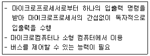
- 폴링 방식
- DMA 방식
- 인터럽트 방식
- 플래그 방식
(정답률: 65%)
int num = 10;
int *p = #
이렇게 선언된 포인터 변수 p는 num 변수의 주소를 담고 있습니다. 따라서 *p를 사용하면 num 변수의 값을 가져올 수 있습니다.